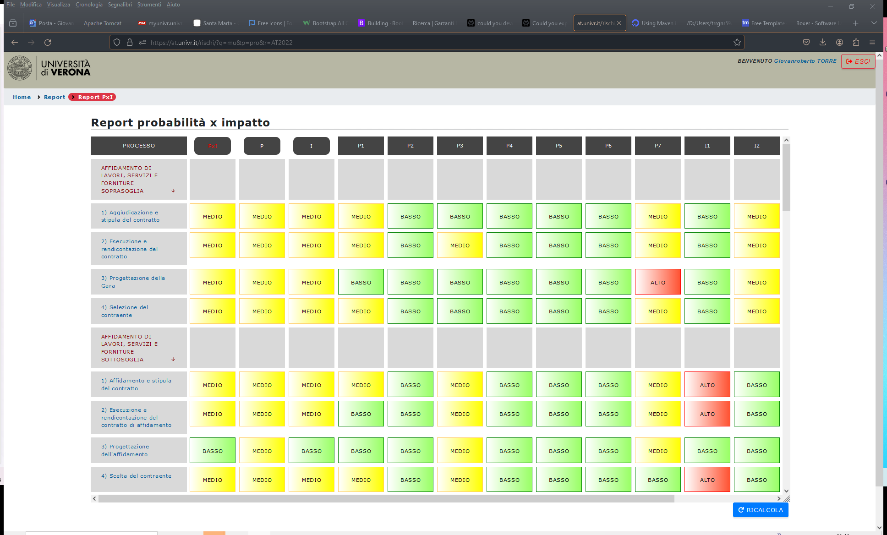

Il report PxI basato sui processi, rilasciato nel software dalla versione 1.50, prevede la generazione di una tabella a doppia entrata, avente in riga i processi ed in colonna gli indicatori di rischio. La confluenza tra il processo (riga) e l’indicatore (colonna) identifica la cella con il valore di rischio cercato. Questo report è chiamato semplicemente “Report PxI” (o “Report probabilità x impatto”):

Si prevede di implementare una nuova tabella a doppia entrata, recante in riga i rischi contestuali ai processi ed in colonna i valori del PxI stimati in funzione della mitigazione prevista. Lo schema del report è riportato nella tabella seguente:
|
PxI processo |
PxI “spalmato” (distribuito) |
Misure previste | Mitigazione stimata | PxI mitigato (stima) | Misure applicate (monitoraggio) | Mitigazione effettiva | PxI (monito-raggio) | |
|---|---|---|---|---|---|---|---|---|
| PROCESSO 1 | ALTO | MEDIO | ALTO | |||||
| Rischio 1 | ALTO | 2G | MEDIO | SI + SI | MEDIO | |||
| Rischio 2 | ALTO | 1S | MEDIO | NO | ALTO | |||
| Rischio 3 | ALTO | 1G + 1S | MEDIO | SI + NO | ALTO | |||
| PROCESSO 2 | MEDIO | BASSO | BASSO | |||||
| Rischio 4 | MEDIO | 3G | BASSO | NO+SI+SI | BASSO | |||
| Rischio 5 | MEDIO | 1G + 1S | BASSO | NO + SI | BASSO | |||
| … | (a) | (b) | (c) | (d) | (e) | (f) | (g) | (h) |
| ← REGISTRO ← | | → MONITORAGGIO → | |||||||
La prima colonna (non etichettata), al posto dei macroprocessi e processi del Report PxI, elenca rispettivamente i processi e i loro rischi.
Ogni processo ha già un valore calcolato del PxI (colonna a).
Questo, effettuando un’assunzione legittima, viene assegnato ad ogni rischio; in altre parole, dal momento che il PxI complessivo del processo è TOT, si assume che ogni rischio del processo stesso sia pari a TOT; non si determina cioè un PxI specifico di ogni rischio, ma inizialmente si parte dal PxI generale, assumendo, in modo leggermente forzato ma comunque logicamente sensato, che il valore PxI di ogni rischio specifico sia pari al PxI generale. Questo valore viene chiamato, nella tabella, “PxI spalmato” (o distribuito). La regola è quindi che ogni valore del PxI distribuito dev’essere uguale al PxI generale del processo.
Successivamente, si ricavano le misure assegnate sul rischio nel contesto del processo. Nell’esempio, è stato previsto di assegnare 2 misure generiche sul Rischio 1, 1 misura specifica sul Rischio 2 e 1 misura generica e 1 specifica sul Rischio 3 (colonna “Misure previste”, o colonna c).
Sulla base degli algoritmi già definiti nei paragrafi precedenti, queste misure comportano una riduzione del rischio, pari a 0,5 per ogni misura generica e pari a 1 per ogni misura specifica. Ciò si concretizza in una riduzione prevista del rischio (chiamata “Mitigazione stimata”) dipendente dalla quantità e dal tipo delle misure stesse (colonna d).
A partire dai valori di mitigazione stimata di ogni rischio, si ricalcola un PxI mitigato (stimato) tramite un algoritmo di ricalcolo (v. relativo paragrafo).
Tutte queste colonne (a – e) sono relative alla parte di registrazione delle misure e assegnazione ai relativi rischi e processi.
A seguire, nel report, possono essere previste colonne di monitoraggio (colonne f – h).
In particolare, per ogni misura prevista, il monitoraggio risponde alla domanda: la misura prevista è stata applicata? Per ognuna di queste domande possono esservi 3 valori: vero, falso, indecidibile. Il terzo valore (indecidibile, o non determinabile) significa che non è stato possibile determinare se la misura sia stata applicata o meno, in quanto mancano alcune informazioni essenziali per la determinazione della risposta. Laddove le informazioni siano sufficienti, però, la risposta dev’essere: VERO, cioè la misura è stata applicata; oppure FALSO, cioè la misura non è stata applicata. Si valuterà in seguito come trattare eventuali applicazioni parziali della misura (Misura parzialmente applicata).
La parte di monitoraggio, comunque, richiederà una sezione di analisi specifica, per cui al momento si rimanda a questo sviluppo ulteriore l’analisi dettagliata dei singoli casi.